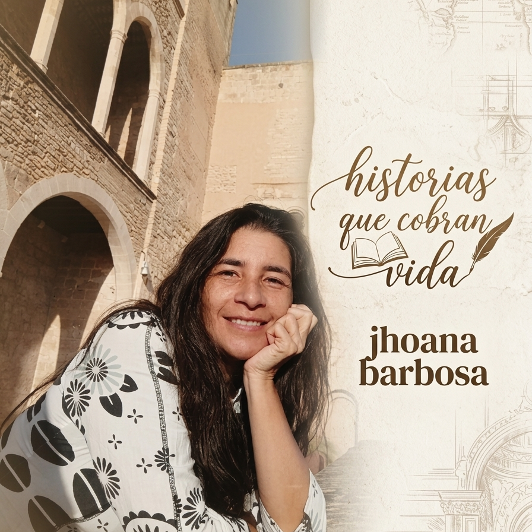
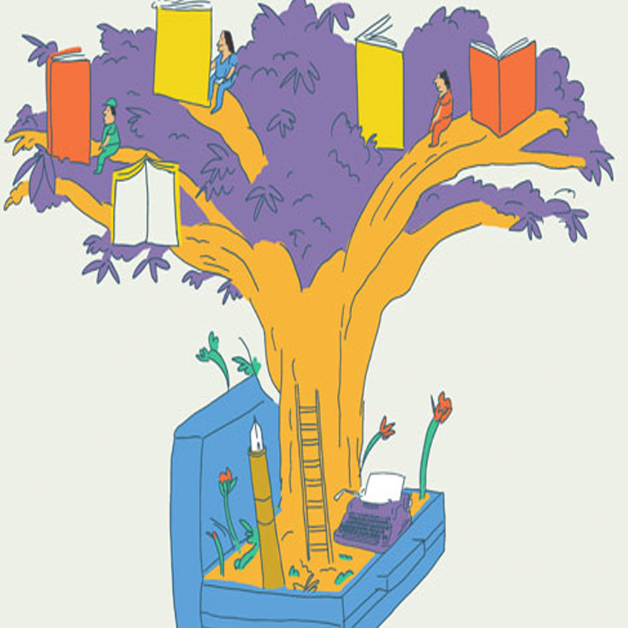

SEluney ha logrado sobrevivir a una gran catástrofe. En su camino, conoce a Max, un armadillo gigante marcado por la soledad y la falta de afecto. Juntos enfrentan desafíos que pondrán a prueba su valentía y su lazo inquebrantable.
Ahora, cuando están a punto de alcanzar su objetivo, descubrirán que la verdadera fuerza no está solo en la resistencia, sino en la amistad que los une. Un relato conmovedor sobre la esperanza y el poder de nunca rendirse.
Yara debe pasar sus vacaciones, en contra de su voluntad, en la casa de su abuelo en los Llanos Orientales. Hace mucho que no lo visita y cree que se encontrará con una casa muy aburrida que no tiene luz eléctrica, ni internet. Además, su tía abuela le ha contado que en esta región de Colombia, abundan los espantos. Poco a poco irá descubriendo los encantos del llano, sus costumbres, el trabajo del campo, la belleza de sus tierras, la amistad de sus pobladores y los misterios que se cuentan generación tras generación.
Un duende malvado, celoso de la felicidad de los demás, decide encerrar en un botellón mágico al hada Iyali, la encargada de que todos los seres vivientes puedan ser felices. Una zarigüeya, muy infeliz, descubre por casualidad, un botellón que el viento ha ido desenterrando, y con la ayuda de un sapo, logra destaparlo. Adentró, todo aquel que mire a través de su boca, encontrará aquello que lo hace más feliz. En este relato de aventuras, solidaridad y hermandad, la pequeña zarigüeya logrará devolverle el botellón a su verdadero dueño y liberra al hada Iyali.
El relato se centra en las amenazas que enfrentan los ecosistemas acuáticos a causa de la contaminación humana. A través de una narrativa dirigida al público infantil.
Este es un cuento que impacta en el lector por su mensaje sobre la necesidad de cuidar el ambiente y evitar su contaminación para que las especies animales no se vean en riesgo de extinción.
Este libro contiene dos interesantes historias que involucran animales en peligro de extinción. Es un llamado a aprender desde niños a cuidar el ambiente y evitar su contaminación.
“EMERGENCIA EN EL RIÓ GRANDE” ganó el premio nacional “Argos construye lectores 2016”.
Manolo, después de un extraño encuentro con un perro, empieza a ver mascotas por todos lados y su deseo de tener una propia crece. Esa misma noche, conoce a Eloi, un duende zumbador de mascotas, que le entrega un libro mágico sobre criaturas de otro mundo. A través de historias sorprendentes, como la del lunático Fito y su mascota extraterrestre, Manolo aprende sobre la importancia de cuidar a un ser vivo. Al final, un misterioso mensaje lo acerca más a cumplir su sueño de tener una mascota que lo acompañe siempre.
Felipe y su amiga Trementina viven una peligrosa aventura en la que descubren con sopresa el daño que los humanos le estamos causando a los ríos al depositar en ellos bolsas plásticas y otros residuos sólidos. Sin darse cuenta, esta aventura los conduce al mar. Allí, Felipe y el mar entablan un diálogo en el que salen a flote temas como: la contaminación, la sedimentación del mar y los ríos, la falta de vegetación en sus riberas, las inundaciones y otros problemas que causamos cuando no cuidamos las fuentes de agua.
Una pequeña manatí se aleja del cuidado de su mamá y una niña, Tomasa, pierde su casa al ser destruida por la creciente. El destino de las dos se une tras la tremenda tormenta que se lleva la casa de la niña. Ocurren una serie de aventuras acompañadas de magia, dentro de un contexto de protección del medio ambiente y de los animales, que llevarán al lector a un viaje por el río, el mar y los misterios del firmamento. Jánako fue una manatí que la autora rescató de un mercado, donde pretendían venderla para aprovechar su carne.
"Ara es una guacamaya inteligente y curiosa que se enfrenta a sus propios miedos cuando decide abandonar a su bandada. Viajará sola con el fin de descubrir la magia de la naturaleza. Quiere investigarlo todo, volar a regiones lejanas, hacer nuevos amigos y conocer a los seres más extraños de la jungla.
Te invitamos a conocer la historia de la pequeña Marú, una nutria que al perderse, en un descuido de su madre, comprende los horrores del mundo de los humanos y la amabilidad de sus amigos los animales. Una historia para reflexionar acerca de nuestra relación con los animales.
El drama de una familia de loros: una historia sobre el contrabando de especies Esta historia revela la dura realidad que enfrentan los loros cuando son víctimas del tráfico ilegal de animales. A través de la mirada de una familia de estas aves, el relato expone el sufrimiento, la separación y el peligro que implica ser arrebatados de su hábitat.